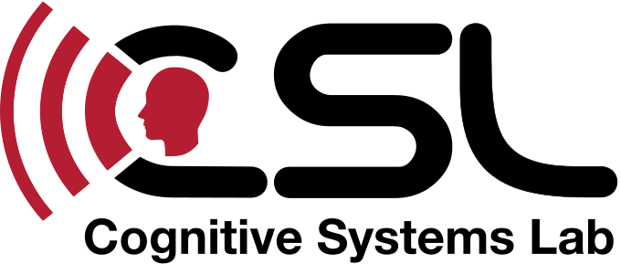
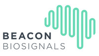
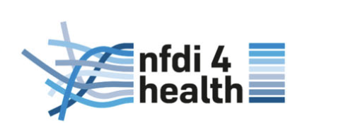
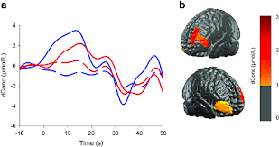
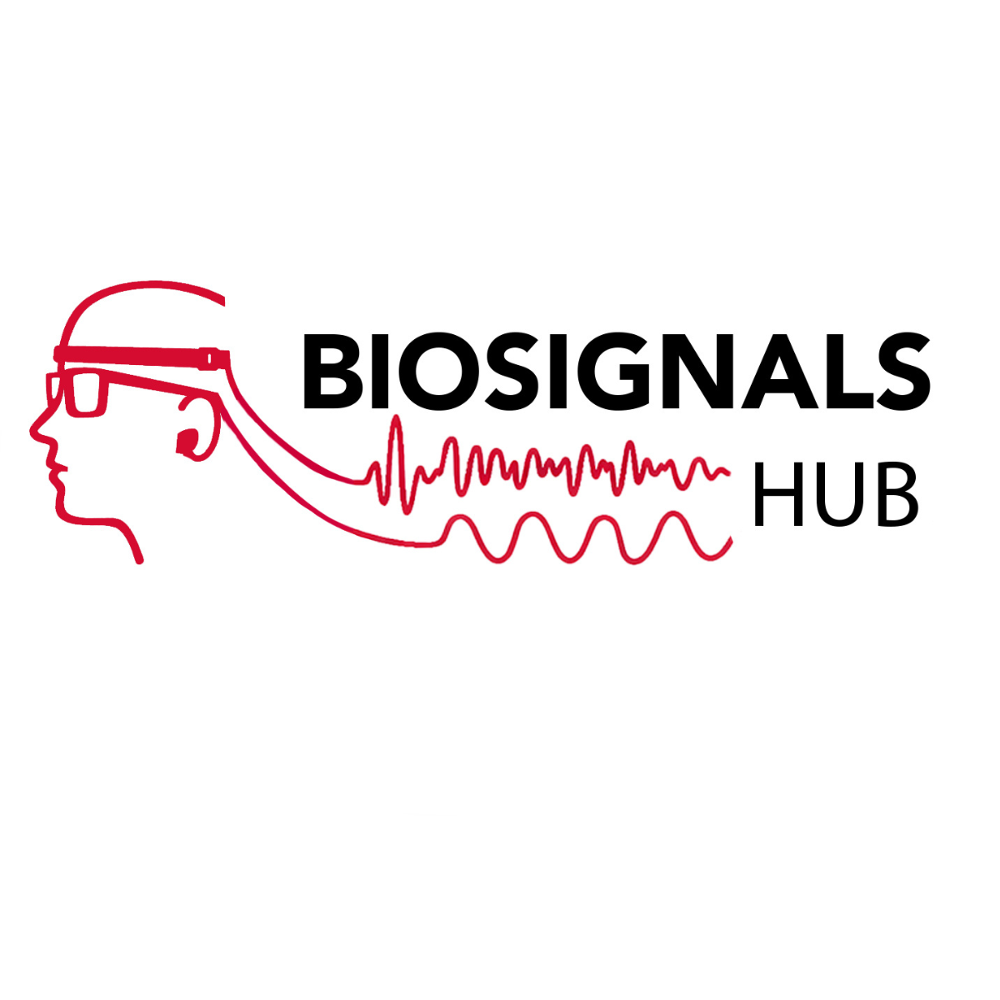

BioSignals Hub
Project Details
My Role
UX Designer & Researcher
Tools
Skills
Deliverables
- Updated Logo
- Website
- Design System
- Handoff documentation and dev specs
Brief
BioHub needed a cohesive visual identity and digital presence that could communicate complex ideas in a clear and accessible way. The project involved developing the brand from the grou[...]
The key goals were to:
- Create a recognizable and cohesive visual identity
- Design a clear, accessible, and easy-to-navigate website
- Translate complex information into understandable content
- Build a scalable and maintainable WordPress platform
Logo Design
As part of establishing a new visual identity, I designed a logo that reflects BioHub's focus while aligning with the broader visual language of the lab. To inform the design, I conduct[...]
- Clarity and recognizably
- Relevance to signals and data visualization
- Scalability across digital contexts
- Alignment with existing lab branding





BiosignalsFinal Logo Design
After several rounds of feedback with the stakeholder, we selected the final logo design. The red color connects the identity to the university and its other laboratory logos, creati[...]
Similar to the CSL and MLL logos, the design incorporates the part of the body from which data is collected. The flowing wave represents data moving from the brain, through sound, an[...]

Website
Building on the visual identity, I designed and developed the website using WordPress and Elementor, focusing on clear information architecture, intuitive navigation, and consistency a[...]